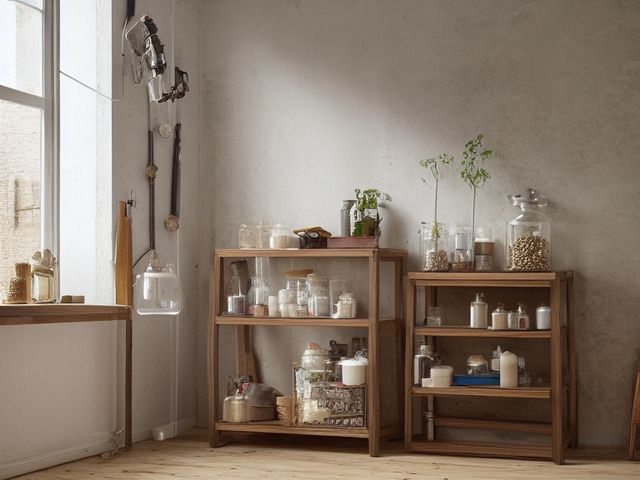

Workshop micro zone
The Fastener and Hardware Zone
Let you put your hand on the right screw straight away, so a project never stops for a hardware run.
One session: 45-75 min. most of it in Straighten, since tipping out the jars is quick and labeling the drawers properly is not

What done looks like
One fastener type and size per compartment, with a sample screw glued to the outside of each drawer face so you match by eye rather than by reading. Deck screws separate from drywall screws, no coffee tin of mixed hardware anywhere on the shelf, and a marked minimum line inside the compartments you empty most.
Check these before you start
- Fall, cut, or crushA loaded small-parts cabinet pulling off the wall, or a top-heavy drawer unit tipping when you open the highest drawer full of bolts.
- Poison, choke, or strangleLoose screws, washers, and wall anchors on the floor at the height where a toddler or a dog finds them first.
The six passes, in order
Work them in this order. Sorting after you have arranged things means arranging things you were about to remove.
Sort
Decide what stays. Everything else leaves the zone now.
Empty the mixed jars onto a tray and keep only what you can name confidently by size and type. Rusted screws, bent nails, and the anchors that came free with a shelf you no longer own are not a stock of hardware.
Straighten
Give what stays a home, placed where the hand actually reaches.
Sort by type first and size second, with the sizes you drive weekly at hand height and the specialty hinges and threaded rod up high. The sample fastener on the drawer face is the label that still works when your hands are dusty.
Shine
Clean it, and use the cleaning to inspect what you cannot see when it is full.
Vacuum the drawers of metal filings and grit, and look for rust bloom in the bottom corners; if you find it, the cabinet is against a cold outside wall and needs moving before you refill it.
Safety
Make the zone safe for everybody who uses it, including the shortest person.
A wall cabinet full of steel fasteners is far heavier than it looks, so fix it into studs rather than plasterboard anchors before you load it. Spilled screws on a concrete floor put you on your back holding something sharp.
Standardize
Write down the best way you know today, so it survives you forgetting.
One compartment per size, no exceptions and no shared drawers, with a minimum line marked inside so a low bin announces itself the moment you slide it open.
Sustain
Attach the reset to something that already happens, so it keeps itself.
The handful of leftover fasteners in your pocket goes back into its compartment before the tools go back on the wall, or into the scrap metal tin if you cannot name it.
The inherited jar of mixed hardware
There is a jar or a tin, probably from a relative's garage, holding a few kilograms of unsorted screws, nuts, and washers, and it has followed you through two houses because there is obviously good hardware in there. Price the alternative first: a full box of the screws you actually drive costs less than the evening you would spend sorting. So give it one sitting. Pick out only the sizes you already have a compartment for, and when the sitting ends, whatever is left in the jar goes to metal recycling that same day. Do not tip the remainder back into a smaller jar. That is exactly how it survived the last two moves.
Cleaning it properly
Vacuum the drawers out and read the corners while they are empty. Metal filings and grit are what jam the runners, and a bloom of rust in a bottom corner is the cabinet telling you where it sits.
Inspect as you clean. Cleaning is the only time you see the zone empty, so use it.
- Rust bloom in the bottom corners of a drawer, which says the cabinet is against a cold outside wall and holding damp.
- The cabinet standing proud of the wall, or a mounting screw that has begun to back out under the weight of steel.
- A drawer runner sagging or dragging, a sign the drawer is carrying more than it was built for.
- Condensation or a damp patch on the wall behind the cabinet.
The standard that keeps it fixed
One size per compartment, a sample fastener on the front, and a minimum line inside.
Reset trigger. When you empty your pockets at the end of a job, the loose hardware goes back into its compartment rather than onto the bench.
Next in this room
- The Power Tool Storage, the zone before this one
- The Material Rack, the zone after this one
- All 6 micro zones in the Workshop
Related reading
- What is 6S?
- This zone's safety pass, in full
- Is one spot in this zone always the one you skip?
- Why this zone gets messy again
- Decluttering vs. organizing
- Before you buy storage for this zone
- Still does not fit, even after the honest count?
- Does something in this zone actually get used somewhere else?
- Stuck on one item in this zone?
- Written the standard, but nobody else follows it?
- Does everyone in the house agree what "done" looks like here?
- Does more than one person use this zone?
- Found a duplicate of something in this zone?
- Why the standard above names one home per category
- Is the everyday item in this zone actually the easy one to reach?
- Not sure whether to keep something in this zone?
- Does this zone keep running out of something?
- Started this zone and stalled partway through?
When you want it off the screen
Carry The Fastener and Hardware Zone into the room
The method above is complete and free. The Whole House Print Pack puts The Fastener and Hardware Zone and the other 113 micro zones on 684 printable cards, so the steps you just read are not stuck behind a phone screen while your hands are full.
The Print Pack, 19 dollarsJust this zone, 4 dollarsOr draw a card free
The Fastener and Hardware Zone on its own is 4 dollars for 6 cards. All 114 micro zones is 19 dollars for 684. The whole house is the better buy; the single zone is here so you can take only what you are working on.
If The Fastener and Hardware Zone keeps fighting back, the real problem usually sits somewhere else in the room. A one hour virtual consult is 250 dollars: we find the function, the friction and the root cause together, and you keep a written standard for the space. See what a consult covers.